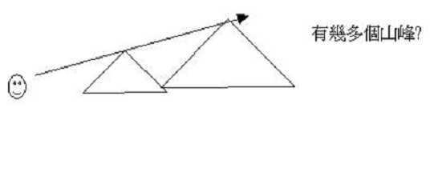

引言：
「他用比喻對他們講許多道理，說：「有一個撒種的出去撒種；」太13:3
「我們並有先知更確的預言，如同燈照在暗處。你們在這預言上留意，直等到天發亮，晨星在你們心裏出現的時候，才是好的。」彼後1:19
～在聖經中，我們會看到很多經文包含了比喻、異象、預言的內容、信徒又如何解釋比喻及預言？是否按字面解釋？
一.比喻
1.運用比喻的目的
A.叫信徒明白神國道理
「耶穌回答說：「因為天國的奧秘只叫你們知道，不叫他們知道。」太13:11
「這是要應驗先知的話，說：我要開口用比喻，把創世以來所隱藏的事發明出來。」太13:35
～比喻本身有助解釋一些複雜的理論，耶穌用猶太人熟悉的事情來講明較複雜的天國奧秘，令他們更明白。
B.叫硬心群體不得福份
「耶穌回答說：「因為天國的奧秘只叫你們知道，不叫他們知道。」太13:11
「所以我用比喻對他們講，是因他們看也看不見，聽也聽不見，也不明白。在他們身上，正應了以賽亞的預言，說：你們聽是要聽見，卻不明白；看是要看見，卻不曉得；因為這百姓油蒙了心，耳朵發沉，眼睛閉著，恐怕眼睛看見，耳朵聽見，心裡明白，回轉過來，我就醫治他們。」太13:13-15
～但若群眾是沒有心聽主講，是硬心的，比喻有審判作用，因若主單用比喻，沒主題及解釋，平常人難明白，若有心的人，會繼續追問比喻的意思，必更明白深奧的道理，但若人沒有人，他可能不會再進問，比喻作用可分別那人是否慕主道，而一些公然褻瀆聖靈硬心的人，也叫他們不曉得，免得神的福份。
2.解釋比喻的原則
A.經文直接的解釋
「他用比喻對他們講許多道理，說：「有一個撒種的出去撒種；撒的時候，有落在路旁的，飛鳥來吃盡了；」太13:3-4
「凡聽見天國道理不明白的，那惡者就來，把所撒在他心裡的奪了去；這就是撒在路旁的了。」太13:19
「有落在土淺石頭地上的，土既不深，發苗最快，日頭出來一曬，因為沒有根，就枯乾了；」太13:5-6
「撒在石頭地上的，就是人聽了道，當下歡喜領受，只因心裡沒有根，不過是暫時的，及至為道遭了患難，或是受了逼迫，立刻就跌倒了。」太13:20-21
～最好解釋比喻的方法是找經文的直接解釋，可以留意上下文，留意作者或經文有中沒有直接解釋比喻的內容，例如太13:4撒在路旁的就代表人聽道後不明白，惡者奪去他心裡的道
B.比喻中心的思想
「說：「某城裡有一個官，不懼怕神，也不尊重世人。那城裡有個寡婦，常到他那裡，說：『我有一個對頭，求你給我伸冤。』他多日不准。後來心裡說：『我雖不懼怕神，也不尊重世人，只因這寡婦煩擾我，我就給他伸冤吧，免得他常來纏磨我！』」主說：「你們聽這不義之官所說的話。神的選民晝夜呼籲他，他縱然為他們忍了多時，豈不終久給他們伸冤嗎？我告訴你們，要快快的給他們伸冤了。然而，人子來的時候，遇得見世上有信德嗎？」」路18:2-8
「耶穌設一個比喻，是要人常常禱告，不可灰心。」路18:1
～每一個比喻通常有它的中心思想，當我們要明白比喻的內容，就要理解傳講者最想透過比喻表明甚麼真理
～例如路18:2-8提及切求寡婦和不義的官比喻主要想帶出甚麼真理？
～路18:1已解釋此比喻的中心是要人常常禱告，不可灰心
C.不合真理的內容
「主說：「你們聽這不義之官所說的話。」路18:6
～有時在比喻中會提及一些不合真理的事，例如路18:6講及有不義的官，這比喻不是要我們學不義的官之不義，而是比喻中心所表達的不義之官尚且因那人時常纏磨，而垂聽她要求，更何況公義的神豈不會聽人常常的禱告
D.不能逐字的解釋
「眾人正在聽見這些話的時候，耶穌因為將近耶路撒冷，又因他們以為神的國快要顯出來，就另設一個比喻，說：「有一個貴冑往遠方去，要得國回來，便叫了他的十個僕人來，交給他們十錠（錠：原文作彌拿約銀十兩）銀子，說：『你們去做生意，直等我回來。』」路19:11-13
～比喻的作用是用比方或例子解明一些真理，所以比喻的重點是設定要表達的真理，人不應逐字解釋比喻的內容，例如路19:13提及十錠銀子，人若刻意解釋為何十錠銀子，「十是甚麼意思？」就失去此比喻的中心主題：不是講「十」是甚麼，而是神的國快來臨，人要到神面前交賬
堂課一
「螞蟥有兩個女兒，常說：給呀，給呀！有三樣不知足的，連不說「夠的」共有四樣：就是陰間和石胎，浸水不足的地，並火。」箴30:15-16
～此比喻的中心思想是甚麼
～為何作者用「螞蟥」(水姪)、「陰間」、「石胎」、「浸水不足的地」、「火」作比喻？
堂課二
「於是用比喻說：「一個人有一棵無花果樹栽在葡萄園裡。他來到樹前找果，卻找不著。就對管園的說：『看哪，我這三年來到這無花果樹前找果子，竟找不著，把他砍了吧，何必白佔地土呢！』管園的說：『主啊，今年且留著，等我周圍掘開土，加上糞；以後若結果子便罷，不然再把他砍了。』」」路13:6-9
～此比喻想表達甚麼真理？
～此比喻的中心主題/思想是甚麼？
二.異象預言
～異象----即眼前看見的事，很多時候是超自然的，或預表將來發生的事
～預言----是未發生及未完成而仿如見到的事
～在聖經中，神往往透過先知及祂的僕人講出很多異象與預言，通常這些異象言是預先講述有關以色列、列國、基督再來、末世等要發生的事
～而解釋異象及預言則有以下原則
1.勿隨從私意解釋預言
「第一要緊的，該知道經上所有的預言沒有可隨私意解說的；因為預言從來沒有出於人意的，乃是人被聖靈感動，說出 神的話來。」彼後1:20-21
～我們不能用自己的私意解說預言，要按神起初感動人的意思來解說的
2.留意經文直接的解釋
「我舉目觀看，見有四角。我就問與我說話的天使說：「這是什麼意思？」他回答說：「這是打散猶大、以色列，和耶路撒冷的角。」」亞1:18-19
〜避免太靈意解釋，如經文本身已說明，就用此解釋。
～「角」通常代表權力與能力，經文本身已說明這四角代表打散以色列的有勢力群體
3.留意此異象中心思想
「「我夜間觀看，見一人騎著紅馬，站在窪地番石榴樹中間。在他身後又有紅馬、黃馬，和白馬。」我對與我說話的天使說：「主啊，這是什麼意思？」他說：「我要指示你這是什麼意思。」那站在番石榴樹中間的人說：「這是奉耶和華差遣在遍地走來走去的。」那些騎馬的對站在番石榴樹中間耶和華的使者說：「我們已在遍地走來走去，見全地都安息平靜。」」亞1:8-11
～異象通常是要表達一個重要啟示，其他細節可能只是比方，有時不需要每細節每一個異象的字眼也要解釋，最重要是尋找神透過此異象想表達的中心思想與主題
～例如亞1:7-17的第一異象----人騎紅馬中心是神全然鑑察全地安息平靜，而「安息平靜」可能有兩個意思：
A.以色列已經被擄至巴比倫七十年，以色列地已全然荒涼，安息七十年
「這全地必然荒涼，令人驚駭。這些國民要服事巴比倫王七十年。」耶25:11
B.對以色列不好的列國也安逸了很久
「我甚惱怒那安逸的列國，因我從前稍微惱怒我民，他們就加害過分。」亞1:15
～透過使者的滙報，我們看到神不是不知道全地的情況，祂知道選民已被擄七十年，地荒涼安息的日子已足了，也知到仇敵仍在安逸中，祂是察看及理解的。
4.留意新約經文的解釋
「我對他們說：「你們若以為美，就給我工價。不然，就罷了！」於是他們給了三十塊錢作為我的工價。耶和華吩咐我說：「要把眾人所估定美好的價值丟給窯戶。」我便將這三十塊錢，在耶和華的殿中丟給窯戶了。」亞11:12-13
「當下，十二門徒裡有一個稱為加略人猶大的，去見祭司長，說：「我把他交給你們，你們願意給我多少錢？」他們就給了他三十塊錢。從那時候，他就找機會要把耶穌交給他們。」太26:14-16
〜新約經文已解釋此段是預言基耶穌被當時百姓(羊群)厭棄，他們用三十塊錢收買猶大，想合謀捉拿殺耶穌
「萬軍之耶和華說：刀劍哪，應當興起，攻擊我的牧人和我的同伴。擊打牧人，羊就分散；我必反手加在微小者的身上。」亞13:7
「那時，耶穌對他們說：「今夜，你們為我的緣故都要跌倒。因為經上記著說：我要擊打牧人，羊就分散了。」太26:31
〜新約經文已解釋此段是預言主被猶太人擊打，也預言將來列國會攻擊屬主的人
5.留意預言應驗的重叠

「到那日，我必建立大衛倒塌的帳幕，堵住其中的破口，把那破壞的建立起來，重新修造，像古時一樣，使以色列人得以東所餘剩的和所有稱為我名下的國。此乃行這事的耶和華說的。耶和華說：日子將到，耕種的必接續收割的；踹葡萄的必接續撒種的；大山要滴下甜酒；小山都必流奶（原文作消化，見約珥三章十八節）。我必使我民以色列被擄的歸回；他們必重修荒廢的城邑居住，栽種葡萄園，喝其中所出的酒，修造果木園，吃其中的果子。」摩9:11-14
「末後的日子，耶和華殿的山必堅立，超乎諸山，高舉過於萬嶺；萬民都要流歸這山。必有許多國的民前往，說：來吧，我們登耶和華的山，奔雅各神的殿。主必將他的道教訓我們；我們也要行他的路。因為訓誨必出於錫安；耶和華的言語必出於耶路撒冷。」彌4:1-2
〜有時預言的經文是指向以色列人被擄歸回，但這只是局部應驗，將來(未發生)更會成為萬國前來朝見神之地。
〜另外，有時先知書題到「耶和華的日子」是指向神使北國滅亡的日子，但有時候預言是有重叠性，更指向將來啟示錄主再來，審判臨到列邦的日子。
6.留意以色列與教會分別
～認識以色列選民與教會有什麼不同，經文所定下的應許是對教會說，還是對以色列人說
堂課三：試解釋亞2異象的意思
2:1 我又舉目觀看，見一人手拿準繩。
2:2 我說：「你往哪裏去？」他對我說：「要去量耶路撒冷，看有多寬多長。」
2:3 與我說話的天使去的時候，又有一位天使迎著他來，
2:4 對他說：「你跑去告訴那少年人說，耶路撒冷必有人居住，好像無城牆的鄉村，因為人民和牲畜甚多。
2:5 耶和華說：我要作耶路撒冷四圍的火城，並要作其中的榮耀。」
2:6 耶和華說：「我從前分散你們在天的四方（原文是猶如天的四風），現在你們要從北方之地逃回。這是耶和華說的。
2:7 與巴比倫人同住的錫安民哪，應當逃脫。
2:8 萬軍之耶和華說，在顯出榮耀之後，差遣我去懲罰那擄掠你們的列國，摸你們的就是摸他眼中的瞳人。
2:9 看哪，我（或譯：他）要向他們掄手，他們就必作服事他們之人的擄物，你們便知道萬軍之耶和華差遣我了。
2:10 錫安城啊，應當歡樂歌唱，因為我來要住在你中間。這是耶和華說的。」
2:11 那時，必有許多國歸附耶和華，作他（原文是我）的子民。他（原文是我）要住在你中間，你就知道萬軍之耶和華差遣我到你那裏去了。
2:12 耶和華必收回猶大作他聖地的分，也必再揀選耶路撒冷。
2:13 凡有血氣的都當在耶和華面前靜默無聲；因為他興起，從聖所出來了。
1.準繩是什麼意思？有什麼用？
2.無城牆什麼意思？
3.火城是什麼意思？
4.此異象是指向教會／以色列？
5.此異象中心想帶出什麼？
參考答案
第三異象----準繩與量度----收回地土(亞2)
〜神對錫安的火熱不單是察看她的情況，打散她的敵人，更會收回地土，預備作重建及復興之用
A.為收回地土作準備
「我又舉目觀看，見一人手拿準繩。」亞2:1
「耶和華必收回猶大作他聖地的分，也必再揀選耶路撒冷。」亞2:12
〜「準繩」是用兩個字結構成的，直譯應為「量器」(h]ebel middah)。準繩的目的，是量耶路撒冷有多寬多長，為何要量度，明顯神要收回此地，在此地重建祂的聖所。
B.當收回地土時光景
a.多人的居住
「對他說：「你跑去告訴那少年人說，耶路撒冷必有人居住，好像無城牆的鄉村，因為人民和牲畜甚多。」亞2:4
〜耶路撒冷的人與牲畜必增多，如無城牆的鄉村，無止境一般！
b.真神的親臨
(1)作聖城的保護
「耶和華說：我要作耶路撒冷四圍的火城，並要作其中的榮耀。」亞2:5
〜火城明顯是保護耶路撒冷(如火的城牆)
(2)作其中的榮耀
「日頭不再作你白晝的光；月亮也不再發光照耀你。耶和華卻要作你永遠的光；你神要為你的榮耀。」賽 60:19
(3)住在選民中間
「錫安城啊，應當歡樂歌唱，因為我來要住在你中間。這是耶和華說的。」那時，必有許多國歸附耶和華，作他（原文作我）的子民。他（原文作我）要住在你中間，你就知道萬軍之耶和華差遣我到你那裡去了。耶和華必收回猶大作他聖地的分，也必再揀選耶路撒冷。」2:10-12
「耶和華的分本是他的百姓；他的產業本是雅各。」申 32:9
〜神在他們中間，令他們歡喜；而猶大地是祂的產業，祂必收回。
(4)多國歸附真神
(5)神從聖所出來
「凡有血氣的都當在耶和華面前靜默無聲；因為他興起，從聖所出來了。」亞2:13
「惟耶和華在他的聖殿中；全地的人都當在他面前肅敬靜默。」哈 2:20
～「前靜默無聲」代表對神一份尊敬
～「從聖所出來」代表會猶太地會有聖所，聖殿會被建立，神會在聖所中出來
～當然以上情景未完全應驗，即或以色列在歷史中曾被重建，但至今我們仍未見到多國歸附以色列，所以以上的應許也指向將來的國度（千禧年）
c.仇敵的遭報
「耶和華說：「我從前分散你們在天的四方（原文作猶如天的四風），現在你們要從北方之地逃回。這是耶和華說的。與巴比倫人同住的錫安民哪，應當逃脫。萬軍之耶和華說，在顯出榮耀之後，差遣我去懲罰那擄掠你們的列國，摸你們的就是摸他眼中的瞳人。看哪，我（或作：他）要向他們掄手，他們就必作服事他們之人的擄物，你們便知道萬軍之耶和華差遣我了。」亞2:6-9
～「北方之地」是巴比倫人居住的地方，與他們同住的以色列人是一切被擄者。
〜「掄手」原文指握拳掉手，恐嚇的舉動；「瞳人」表示神看為寶貴的選民。
〜神要懲罰擄掠選民的列國，所以選民應逃離這些國歸回耶路撒冷。